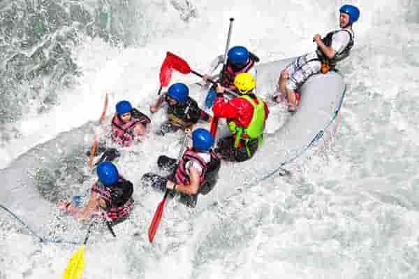

Sink or Swim Safaris

To provide thrill-seekers with the ultimate test of courage, grit, and survival skills by turning every river run into an unpredictable, adrenaline-fueled adventure. We don't just navigate the rapids; we let the wild waters decide who conquers the canyon and who learns to swim.


In line with that mission statement, This website is meant for your information. It describes who we are, what we offer, and give you a way to contact us after your awesome adventures!